CS 184 Sp23 Project 3: PathTracer
Website Link: https://saltyminty.github.io/cs184-websites/proj3-1/index.html
Rishi Kundargi
Mingyang Wang
Overview
In this project, we implemented path-tracing algorithms to generate, trace, and light up images and objects using rays. The first step involved generating rays (camera oriented), and detailing how these rays interacted with objects (primitives) in our images to find intersection points using the Moller Trumbore Algorithm. Then, in order to speed up rendering and intersection points, we implemented BVH (Bounding Volume Hierarchies) in order to efficiently process primitives and have fewer ray-object intersection checks. After that, we started to move into lighting techniques, and using Monte Carlo integration approximations (unbiased estimators), implemented different sampling methods (hemisphere and importance) for zero and one-bounce lighting. Next, we moved on to global illumination methods, which required using Russian Roulette to terminate rays and allowed us to implement more than one bounce illumination. Finally, we implemented adaptive sampling, which speeds up runtime by adjusting the number of samples for a pixel based on how difficult it is to sample (by analyzing when the value of the illuminance converge)! Overall, we discussed methods of rending light with regard to optimization of speed and image quality!
Part 1
Walk through the ray generation and primitive intersection parts of the rendering pipeline.
- The first step in this part was to generate camera rays, giving us an origin and direction that intersects the coordinates given to us. The first step here was to define the new camera space system, which we did by computing the bottom left and top right corner of the camera space based on the horizontal and vertical FoV of the camera. Then, we transformed the image space normalized coordinates into camera coordinates, and finally returned a new Ray starting at the origin, with the direction corresponding to the camera direction, converted to global coordinates.
- Then, we implement radiance sampling across pixels. To do this, we draw random samples of rays that go through the pixel – draw a random sample in ([0, 1), [0, 1)), add it to the sample point location, normalize the coordinates, generate a ray from the camera through the location. With this ray, we can then estimate the radiance of that ray to use in our estimate of the total radiance of the pixel.
- We then check the intersections of rays with triangles and spheres.
- For triangles, we used an optimized version of intersection checking via the Moller Trumbore algorithm, which is discussed in more detail in the section below.
- For spheres, we set the ray equation equal to the sphere equation and solved the quadratic equation. This can yield zero, one, or two intersection points; zero intersections means we don’t intersect with the sphere, one intersections means we graze the sphere, and two intersections mean that the ray passes through (into and out of) the sphere, in which case we want to take the smaller value (as we hit that intersection first). However, we only consider values between the ray’s min and max t values – a negative t value means that the object is behind the ray, and a t value above the max t value means it is outside of the ray’s max range and/or the ray terminates at another intersection before reaching the object.
Explain the triangle intersection algorithm you implemented in your own words.
- The algorithm we used to calculate the intersection point between a triangle and a ray is the Moller Trumbore Algorithm, described in class and pictured below. 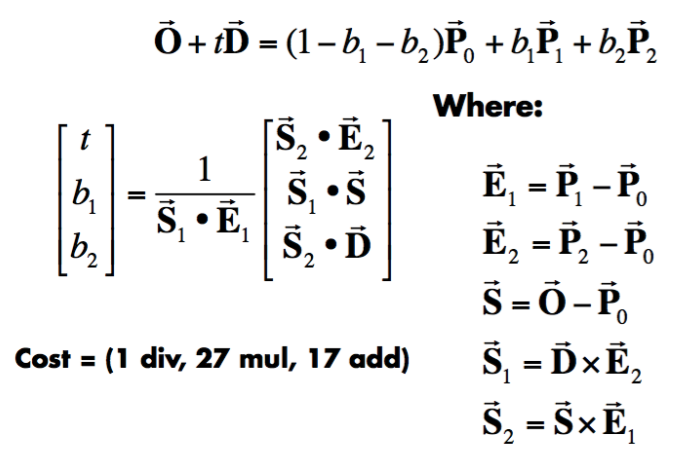
Essentially, we first calculate the edge vectors of the triangle to form a normal vector in the plane the triangle lies in. Then we use this to determine if there is an intersection between the ray and the plane. T is the time of intersection, and (1-b1-b2, b1, b2) are the barycentric coordinates of the intersection point. Then we check if this intersection point is inside the triangle (which occurs when our barycentric coordinates are all positive and sum to 1), and if the time of intersection t occurs between the ray’s minimum and maximum t values.
Show images with normal shading for a few small .dae files.
- CBempty.png - CBspheres.png
 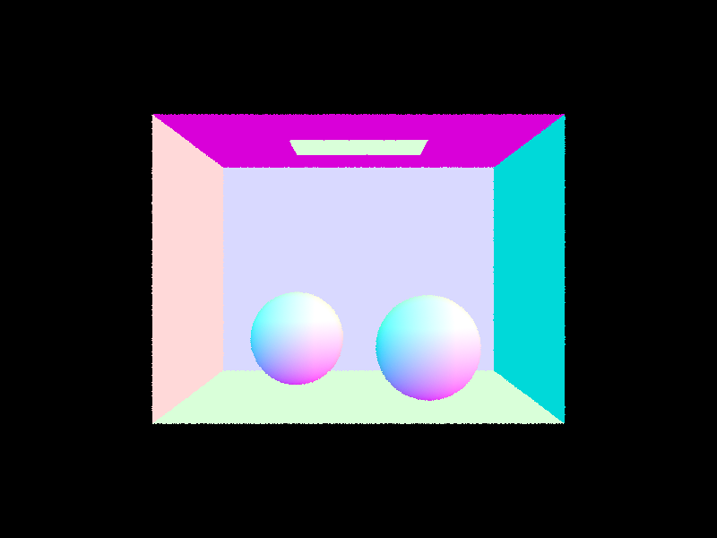
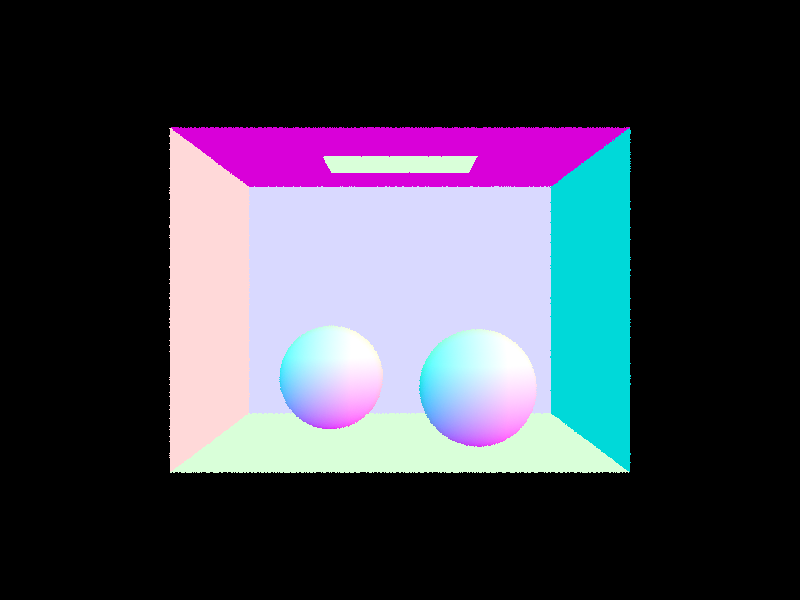
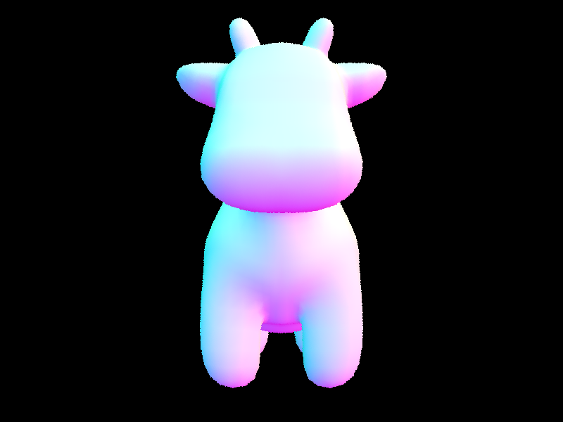
Part 2
Walk through your BVH construction algorithm. Explain the heuristic you chose for picking the splitting point.
- To create our bounding volume hierarchy, we first create a bounding box that contains all primitives and initialize a new BVH node containing just that bounding box. If that bounding box has more than max_leaf_size primitives, we divide the primitives into two children bounding boxes, left and right. We chose the centroid heuristic of splitting on the centroid of all of the primitives on one of the main axes – we find the best one by testing all 3 and choosing the one that causes the most even split in number of primitives on each side, which maximizes BVH efficiency. We then create these children by recursively calling construct_bvh. Once we have less than max_leaf_size primitives in a node, we construct a leaf node containing all of its primitives and its corresponding bounding box.
Show images with normal shading for a few large .dae files that you can only render with BVH acceleration.
- MaxPlanck.png - CBlucy.png:
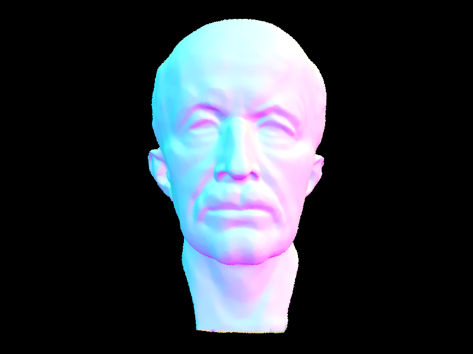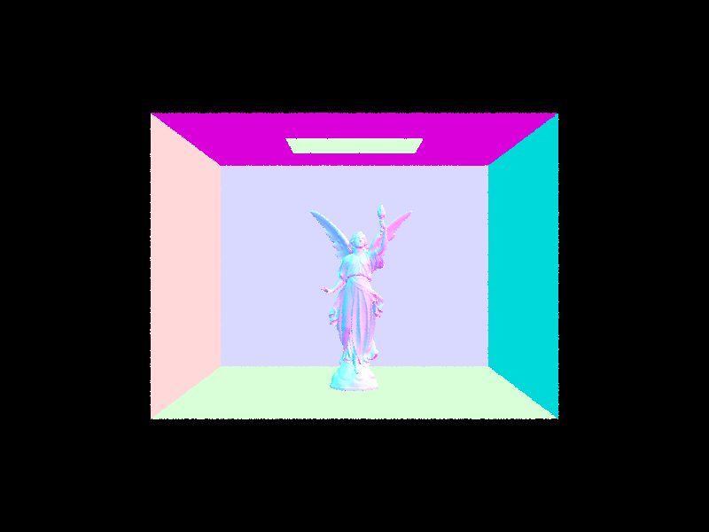
Compare rendering times on a few scenes with moderately complex geometries with and without BVH acceleration. Present your results in a one-paragraph analysis.
- Building the BVH typically takes very little time (in the order of hundredths of a second).
- [PathTracer] Rendering... 100%! (0.0415s)
- [PathTracer] Average speed 3.1470 million rays per second.
- [PathTracer] Averaged 7.778440 intersection tests per ray.
- [PathTracer] Rendering... 100%! (8.8209s)
- [PathTracer] Average speed 0.0538 million rays per second.
- [PathTracer] Averaged 1344.498770 intersection tests per ray.
- [PathTracer] Rendering... 100%! (0.0865s)[PathTracer]
- Average speed 2.7353 million rays per second.
- [PathTracer] Averaged 12.962752 intersection tests per ray
- [PathTracer] Rendering... 100%! (106.2906s)
- [PathTracer] Average speed 0.0032 million rays per second.
- [PathTracer] Averaged 15857.412787 intersection tests per ray.
- [PathTracer] Rendering... 100%! (0.0542s)
- [PathTracer] Average speed 3.4689 million rays per second.
- [PathTracer] Averaged 2.757583 intersection tests per ray.
- PathTracer] Rendering... 100%! (279.2004s)
- [PathTracer] Average speed 0.0011 million rays per second.
- [PathTracer] Averaged 45373.271559 intersection tests per ray.
- As you can see, using BVH improves rendering speed by a significant amount, and results in much fewer intersection tests per ray! By checking for intersections with BVH’s we can reduce significantly the amount of intersection tests we need to do per ray, as we can “discard” or “throw away” primitives that lie in bounding boxes of BVH Nodes that do not intersect with the ray.
Part 3
Walk through both implementations of the direct lighting function.
- Uniform Hemisphere Sampling: In this method, we estimate the direct lighting on a point by sampling uniformly in a hemisphere. First, we cast a camera ray through a specific pixel onto the scene, and then determine the color by calculating how much light is reflected back toward the camera from this point. To do this, we need to calculate how much light arrived at the intersection point using the rendering equation. In this implementation, we use a Monte Carlo estimate as shown in the spec.
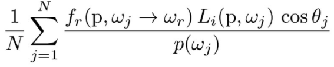
- Using this, from the intersection point, we uniformly sample incoming ray directions (using a 3-D Sampler) in the hemisphere and check if a new ray going from hit_p (intersection location) in the direction we sampled intersects another object. If it does, we get the emission of the newly intersected object (which reflects the light given off by it if its a a light source), and multiply it with the BSDF, and the cosine of the angle (dot product) between our ray and our normal vector of the hit point. Then, because we are doing a Monte Carlo approx, we sum up this value for all samples and take an average to get an estimated value for illumination.
- Importance Sampling: Importance sampling samples the integrand according to where we most expect it to contribute to the integral. In the case of direct lighting, we sample all lights directly, as opposed to random sampling all directions uniformly in a hemisphere (as only rays coming from the light source will contribute to the lighting calcuation). For each light in the scene, we only sample from directions between the light source and our target point. If we cast a ray in the direction we sampled, and it hits no object between the light source and our hit point, this ray must contribute to the total light of our target point (as hitting nothing else in between means it must hit the light source)! The procedure afterward in regard to the calculations remains the same.
- Importance sampling allows us to render with point lights, which uniform hemisphere sampling is unable to do (since we will randomly intersect a point light with probability zero). However, importance sampling enables us to draw one sample directly to the point light. An example is shown on the next page.
Show some images rendered with both implementations of the direct lighting function.
Uniform Hemisphere Sampling: Importance: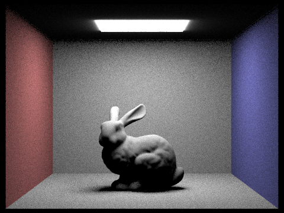
Dragon.dae: doesn’t work with hemisphere sampling since it consists of a point light
Focus on one particular scene with at least one area light and compare the noise levels in soft shadows when rendering with 1, 4, 16, and 64 light rays (the -l flag) and with 1 sample per pixel (the -s flag) using light sampling, not uniform hemisphere sampling.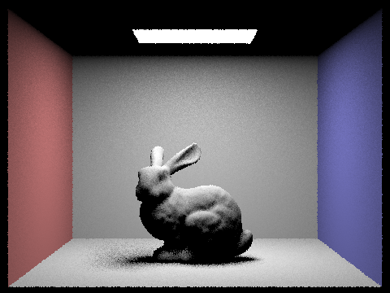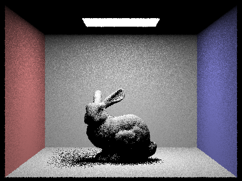
Compare the results between uniform hemisphere sampling and lighting sampling in a one-paragraph analysis.
Uniform Hemisphere sampling, with the same number of samples per pixel and light rays, renders a much noisier image than importance sampling. This is because a large number of samples from the uniform contribute zero or close to zero irradiance to our final pixel value, and thus, although it counts as a sample, our final result acts as if those samples don’t even count. Therefore, Uniform Sampling delivers a similar quality to a lower number of samples per pixel light as importance sampling and takes more time. Overall, because importance sampling only samples from where the light source originates, it produces a much more accurate, less noisy image.
Part 4
Walk through your implementation of the indirect lighting function.
- To implement global illumination, we need three different functions to render light. Zero-bounce, one-bounce, and more than one bounce. The first two were implemented in previous parts, so all that we have left to do is to implement more than one bounce – light that bounces more than one time and lands on our target (hit) point. However, since lights can bounce infinitely, we use the Russian Roulette method described in lecture to terminate rays via recursion and probability. Russian roulette randomly determines at each recursive step (bounce of light) to terminate sampling with some probablity. The probability we used was 0.3.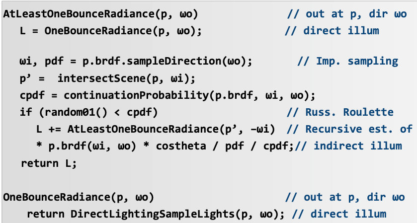
- Based on the pseudo code above (taken from lecture), we implemented the above process in our code. We initialize a vector to be the radiance from one bounce, and if we pass a set of conditions, then we continue to Russian Roulette. If based on our random number generated we decide to continue with a bounce, we add the radiance of the subsequent bounce (recursively calling at_least_one_bounce_radiance) to our original one bounce radiance vector, weighted by the brdf, cosine term, pdf, as well as the probability of Russian Roullete terminating, which accounts for the fact that we are using Russian Roulette and maintains our unbiased property of the Monte Carlo estimator.
Show some images rendered with global (direct and indirect) illumination. Use 1024 samples per pixel.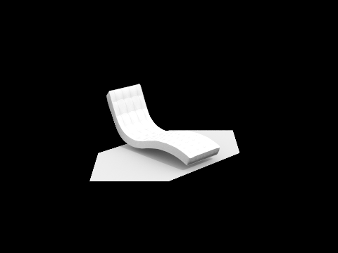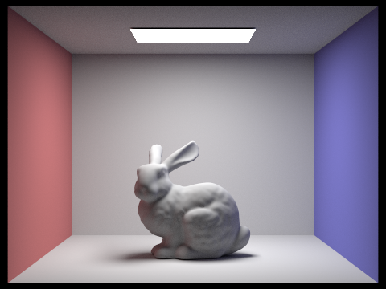
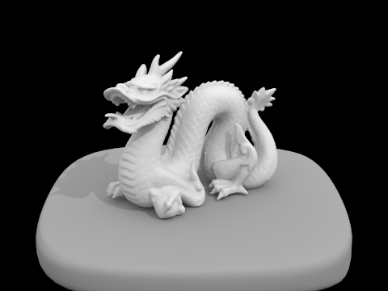
Pick one scene and compare rendered views first with only direct illumination, then only indirect illumination. Use 1024 samples per pixel. (You will have to edit PathTracer::at_least_one_bounce_radiance(...) in your code to generate these views.)
Top left: global illumination
Top right: direct illumination
Botton left: indirect illumination
The most striking difference between direct and indirect illumination is that indirect illumination allows light to be reflected upwards towards the light source, which enables the ceiling (the surface on which the light source resides) to also be illuminated. Further, the shadows in direct illumination are completely black, while in indirect, it is more realistic as it allows the reflected light from reflections (2 + bounces) to light up the shadows, and gives a more neutral realistic tone to the shadows cast by the balls. 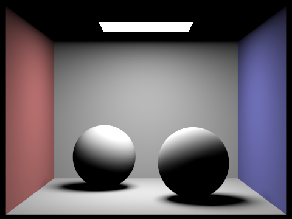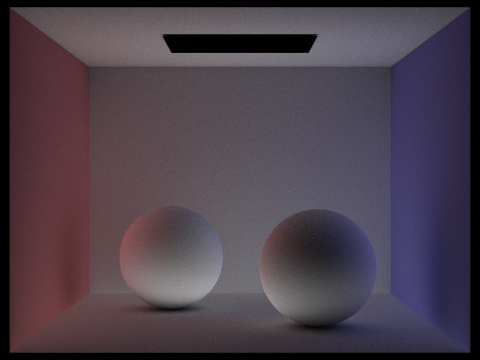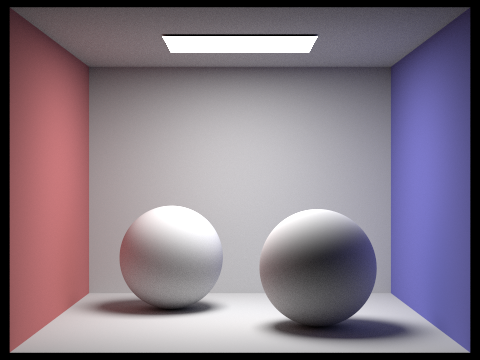
For CBbunny.dae, compare rendered views with max_ray_depth set to 0, 1, 2, 3, and 100 (the -m flag). Use 1024 samples per pixel.
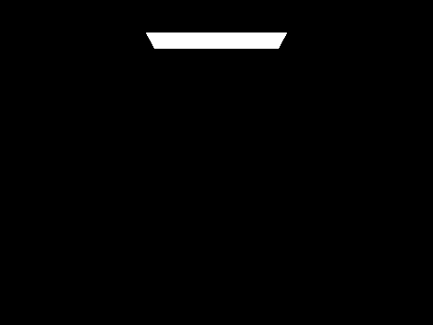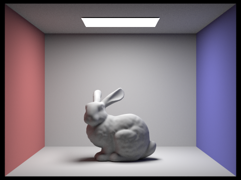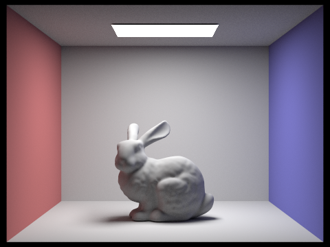
- Setting max ray depth to 0 and 1 correspond to the same result as zero_bounce and one_bounce lighting, respectively. At ray depth 1, we see that the surface that contains the light and the shadows cast by the bunny do not experience any lighting, and are completely black which is unrealistic. As we increase the ray depth to 2, the shadows and the ceiling begin to experience light, with both becoming illuminated, and the shadows becoming less dark. However, as we continue to raise the max ray depth, the improvement in the quality of rendering begins to drop, and there is almost no noticeable difference between 2, 3, and 100. The main differences lie between 1-2, as in 1-2 the shadows the bunny cast become less dark, as the rebounded rays continue to light those areas up.
Pick one scene and compare rendered views with various sample-per-pixel rates, including at least 1, 2, 4, 8, 16, 64, and 1024. Use 4 light rays.
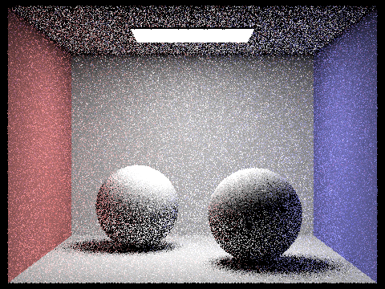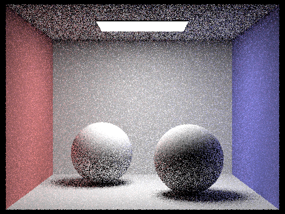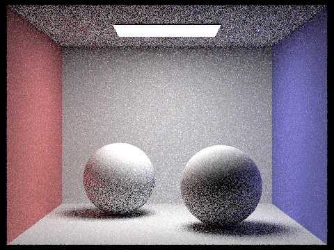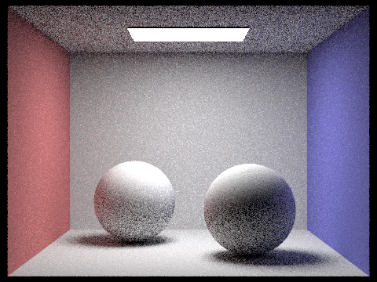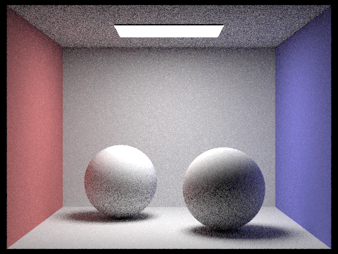
Here, we can see that increasing sample per pixel rates decreases the noise of the render, and creates a smoother image. We see that we need a high sample-per-pixel rate for indirect lighting in order to render noiseless images, due to the increased randomness from each bounce as well as Russian Roulette.
Part 5
Explain adaptive sampling. Walk through your implementation of adaptive sampling.
- The basis of the principle behind adaptive sampling relies on the fact that we use Monte Carlo integration for our path tracing to approximate and generate realistic images. This creates a fair bit of noise, which can be reduced by increasing the sampling rate per pixel. However, that increases the time and resources taken to render an image.
- The key insight is that we can vary our sampling rate per pixel. Some pixels converge faster to their “true value” than others, which implies we sample these “easier” pixels at a lower sampling rate and increase the sampling rate for other “harder” pixels.
- The algorithm used defines a variable I = 1.96 * sigma/sqrt(n), where sigma, mu and n are the std, mean, and number of the n samples traced through a pixel. If I <= 0.05 * mu, we assume the pixel value has converged, and we stop tracing more rays for this pixel. This is equivalent to drawing a 90% confidence interval on our estimated pixel value.
- To implement this, we keep track of two values while we ray trace, the sum of illuminance for each ray, and the sum of squared illuminance for each ray, and using these we can calculate the mean and variance at every step.
- For each pixel, we check if we reached our stopping condition after every samplesPerBatch pixels. If we reach the stopping condition, we no longer trace rays for that pixel and can return, but if we haven’t we continue to sample lights for that pixel.
Pick two scenes and render them with at least 2048 samples per pixel. Show a good sampling rate image with clearly visible differences in sampling rate over various regions and pixels. Include both your sample rate image, which shows your how your adaptive sampling changes depending on which part of the image you are rendering, and your noise-free rendered result. Use 1 sample per light and at least 5 for max ray depth.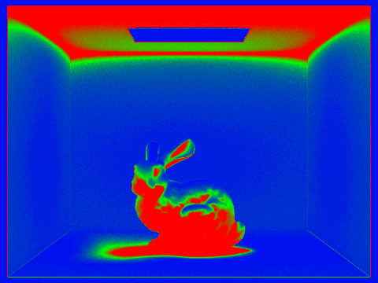
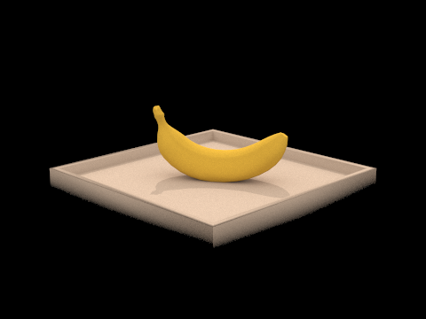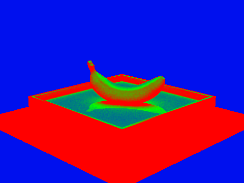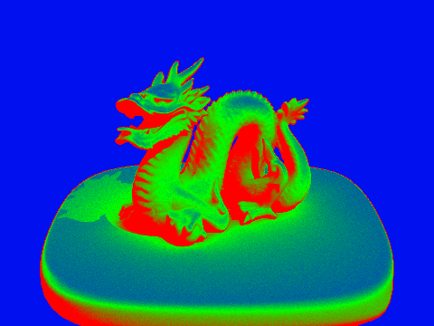
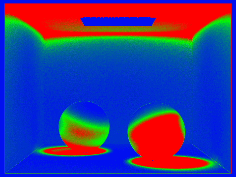
At the end, if you worked with a partner, please write a short paragraph together for your final report that describes how you collaborated, how it went, and what you learned.
We performed pair programming, and at times worked individually to get the project done. Rendering was done entirely by one person, and the write-up was done entirely by the other. We learned a lot about lighting, illumination, and different approaches to getting an efficient and proper image. Loved it!